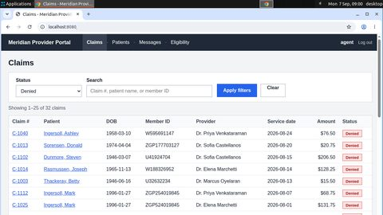
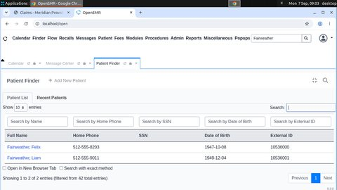
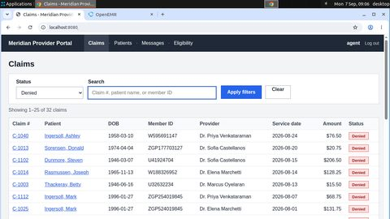
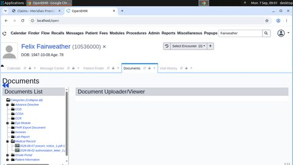
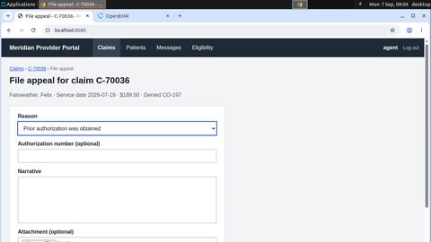
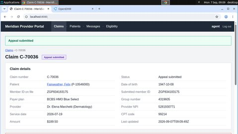
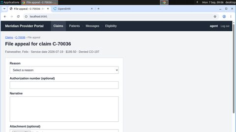

Forkloop evidence bundle
exp1: a student failure corrected from a checkpoint (Docker worlds)
One failure, repaired
resolve_denial-train_v2-010036
Task. Claim C-70036 for Felix Fairweather (DOB 1947-10-08) was denied with code CO-197 (prior authorization missing). Find the authorization number in the patient's documents in OpenEMR (log in as admin / pass), then in the payer portal file an appeal on C-70036 with reason 'Prior authorization was obtained' and enter that authorization number. Apps: OpenEMR at http://localhost/openemr, payer portal at http://localhost:8080. File exactly one appeal and do not touch any other claim.
The agent under repair (student) took 32 steps and ended failed with WRONG_VALUE. What the verifier read from the databases:
appeal_auth_number: database hasAUTH-35K98047, task needsAUTH-35K90047

key("ctrl+t")
click(91, 557)click(182, 657)
type("C-70036")done()Checkpoints and the chosen restart point
● replay/reset checkpoint ■ provider VM snapshot green = clean, red = damaged (a safety violation or a new wrong record already persisted), amber = unknown.
- step 12 — origin: {"kind": "memory", "step": 14, "why": "near miss (1 edits)"}
- step 0 — start: {}
Restart points come from recorded evidence (controller-side; the teacher never sees why the attempt failed). Each branch restores the world and the agent memory independently.
3 branches
failed br-5171a04ffb53
- from
- step 12 (replay)
- restore
- ok in 97.549 s, replayed 12 steps
- fidelity
- tables equal: True; screen distance 0.0
- verdict
NOT_DONEafter 102 steps
verified br-f2bcb5b4a23e
- from
- step 12 (replay)
- restore
- ok in 73.023 s, replayed 12 steps
- fidelity
- tables equal: True; screen distance 0.0
- verdict
OKafter 23 steps

click(172, 656)
click(337, 464)
done()verified br-8119628f9b8c
- from
- step 12 (replay)
- restore
- ok in 123.387 s, replayed 12 steps
- fidelity
- tables equal: True; screen distance 0.0
- verdict
OKafter 22 steps

click(168, 635)
click(341, 382)done()What the dataset received
45 action-demonstration records from the verified branch (steps 12–34); each carries the exact input the teacher saw on that path. The first one:
INPUT memory: [] INPUT last actions: ["click(91, 557)", "click(810, 390)", "click(436, 405)", "click(31, 616)"] TARGET (screen pixels): The Medical Record folder shows two documents; open the authorization letter to verify it matches this claim. click(172, 656)
record 7422a747bf60c5a5 · source branch br-f2bcb5b4a23e · memory provenance ok
Datasets and lineage
| dataset | records | preference pairs | origins | records.jsonl sha256 | audit |
|---|---|---|---|---|---|
ds-ff04067bf950exp1 warm start W | 2425 | 0 | {"initial_state_demo": 2425} | ff04067bf95090f0… | {"hidden_in_text_input": 753, "memory_provenance_bad": 0, "memory_provenance_ok": 2427, "type_target_from_memory": 29, "type_target_needs_screen": 0} |
ds-7b346e2c7915exp1 A1-b100 | 4167 | 0 | {"initial_state_demo": 4167} | 7b346e2c791595e8… | {"hidden_in_text_input": 1404, "memory_provenance_bad": 0, "memory_provenance_ok": 4171, "type_target_from_memory": 55, "type_target_needs_screen": 0} |
ds-3d69d44d56e4exp1 A2-b100 | 1014 | 27 | {"correction_suffix": 770, "restart_demo": 244} | 3d69d44d56e4ce67… | {"hidden_in_text_input": 489, "memory_provenance_bad": 0, "memory_provenance_ok": 1015, "type_target_from_memory": 13, "type_target_needs_screen": 0} |
ds-4c71fe661490exp1 A3-b100 | 1197 | 13 | {"restart_demo": 1197} | 4c71fe661490abdc… | {"hidden_in_text_input": 378, "memory_provenance_bad": 0, "memory_provenance_ok": 1199, "type_target_from_memory": 17, "type_target_needs_screen": 0} |